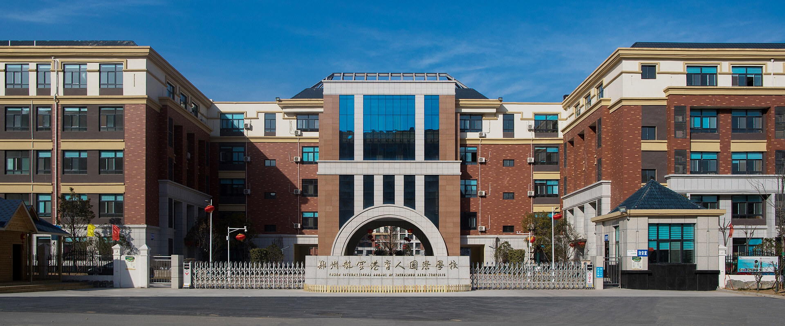

郑州育人学校由刘付坤校长于2000年创办，至今已在郑州发展16年，于2014年成立教育集团，并在创始人家乡襄城县建设了 一所学校。十多年来，学校遵循“以人为本，因材施教”的核心育人理念，争取帮助每一个孩子打开了解世界的一扇窗。 2016年5月和6月，郑州育人教育集团先后与美国名校普渡大学和美国德州大学圣安东尼奥分校签订了校长和师资培训合作协议；
2016年8月，郑州航空港区育人国际学校15年一贯制（K12）新校区开始启用。同时，美国阿尔伯特·爱因斯坦学院授权郑州育人教育集团在旗下郑州航空港育人国际学校（经开区分校）实施幼儿园和小学合作项目，成 为美国阿尔伯特·爱因斯坦学院在中国的第一个校区和中国总部所在地。
2016年8月，郑州航空港区育人国际学校15年一贯制（K12）新校区开始启用。同时，美国阿尔伯特·爱因斯坦学院授权郑州育人教育集团在旗下郑州航空港育人国际学校（经开区分校）实施幼儿园和小学合作项目，成 为美国阿尔伯特·爱因斯坦学院在中国的第一个校区和中国总部所在地。
